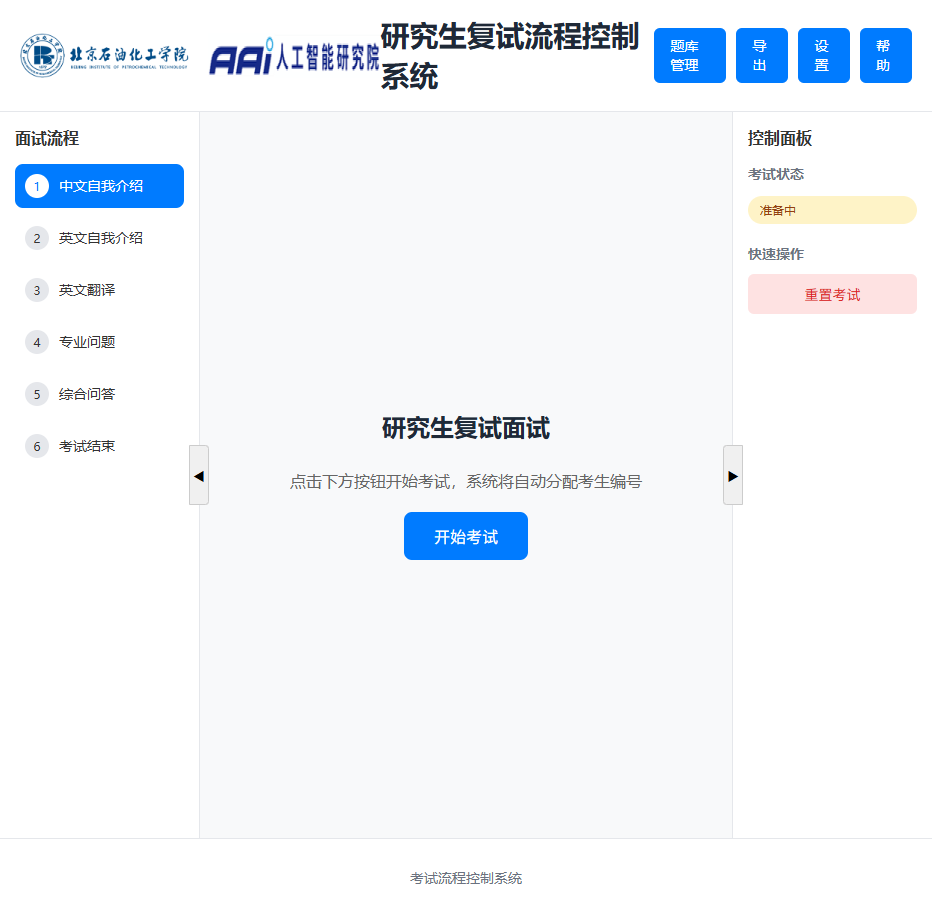
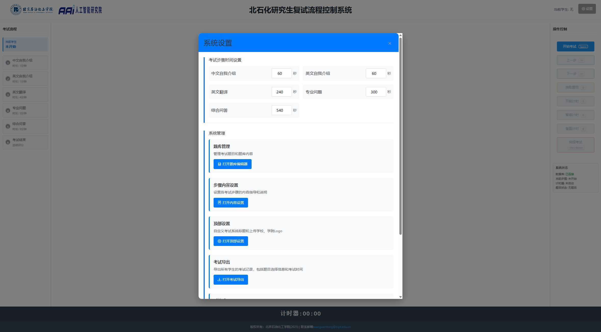

考试系统使用指南
研究生复试流程控制系统 · Exam System Guide
系统概述
研究生复试流程控制系统是一个专为研究生复试面试设计的综合管理平台，提供完整的面试流程控制、题库管理、计时功能和考生记录管理。
- 六步考试流程：中文自我介绍 → 英文自我介绍 → 英文翻译 → 专业问题 → 综合问答 → 考试结束
- 智能题库管理：支持翻译题和专业题的分类管理，包含文本和图片内容
- 随机抽题功能：自动随机选择题目，避免重复，确保公平性
- 精确计时控制：每个环节独立计时，支持暂停、重置和自定义时长
- 考生记录管理：自动记录每位考生的考试进度和抽取题目
- 系统状态监控：实时显示数据库连接、当前步骤、计时器状态等
界面介绍

图 1：考试系统主界面
界面布局
- 顶部标题栏：显示系统标题、学校 Logo 和当前考生信息
- 左侧流程面板（20% 宽度）：显示六步考试流程和当前进度
- 中央内容区：显示考试内容、题目和指导信息
- 右侧控制面板（20% 宽度）：包含操作按钮和系统状态
- 底部状态栏：显示计时器和版权信息
考试流程
| 步骤 | 名称 | 默认时长 | 说明 |
|---|---|---|---|
| 1 | 中文自我介绍 | 1 分钟 | 考生用中文进行自我介绍 |
| 2 | 英文自我介绍 | 1 分钟 | 考生用英文进行自我介绍 |
| 3 | 英文翻译 | 4 分钟 | 随机抽取英文段落进行翻译 |
| 4 | 专业问题 | 5 分钟 | 按科目随机抽取专业问题回答 |
| 5 | 综合问答 | 9 分钟 | 考官综合提问环节 |
| 6 | 考试结束 | — | 总结评分，准备下一位考生 |
考试流程
开始新考试
- 点击"开始考试"按钮或按 Space 键
- 系统自动生成考生编号并创建考试记录
- 进入第一步：中文自我介绍
- 左侧面板显示当前步骤，右侧控制按钮激活
自动流程：使用"下一步"按钮按顺序进行，系统会自动保存进度和状态。
手动跳转：可以使用"上一步"返回之前的环节，或"完成考试"直接结束。
手动跳转：可以使用"上一步"返回之前的环节，或"完成考试"直接结束。
题目抽取（步骤 3 和 4）
- 英文翻译（步骤 3）：点击"抽取题目"自动随机选择翻译题
- 专业问题（步骤 4）：首先选择科目，然后随机抽取该科目的专业题
- 抽取的题目会显示在中央内容区，包含文本和图片内容
- 已抽取的题目会被标记为"已使用"，避免重复抽取
操作控制
| 按钮 | 快捷键 | 功能 | 使用时机 |
|---|---|---|---|
| 开始考试 | Space | 开始新的考试流程 | 考试开始前 |
| 上一步 | ← | 返回上一个考试步骤 | 需要重新进行某个环节时 |
| 下一步 | → | 进入下一个考试步骤 | 当前环节完成后 |
| 抽取题目 | D | 随机抽取考试题目 | 翻译和专业问题环节 |
| 开始计时 | T | 开始当前环节计时 | 考生开始答题时 |
| 暂停计时 | P | 暂停当前计时器 | 需要中断计时时 |
| 重置计时 | R | 重置计时器到初始值 | 重新开始计时时 |
| 完成考试 | Ctrl + Enter | 直接结束当前考试 | 提前结束考试时 |
注意：快捷键只在对应按钮可用时生效，且不会重复触发。
系统设置

图 2：系统设置界面
时间设置：可以自定义每个考试环节的时长（以秒为单位），设置后立即生效。
系统管理功能
- 题库管理：打开数据库编辑器，管理翻译题和专业题
- 步骤内容设置：设置各考试步骤的指导内容和说明
- 顶部设置：自定义系统标题和上传学校、学院 Logo
- 考试导出：导出所有考生的考试记录和题目信息
- 系统重置：清除所有考试记录，恢复初始状态
常见问题
Q: 系统显示"数据库连接失败"怎么办？
- 确认服务器正常运行（检查控制台是否有错误信息）
- 刷新页面重新连接
- 检查数据库文件是否存在于
assets/data目录
Q: 抽取题目时显示"无可用题目"？
- 进入题库管理，检查是否有足够的题目
- 确认题目没有全部被标记为"已使用"
- 可以通过系统重置清除使用状态
Q: 计时器不工作或显示异常？
- 点击"重置计时"按钮
- 检查系统设置中的时间配置
- 刷新页面重新初始化
Q: 如何恢复到某个考生的考试状态？
系统会自动保存每位考生的进度。刷新页面后，系统会自动恢复到最后一位考生的状态，包括当前步骤和已抽取的题目。